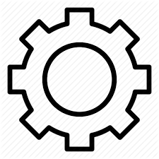

<!-- <ion-header>
  <ion-toolbar> -->
    <!-- <ion-buttons slot="end">
      <ion-menu-button></ion-menu-button>
    </ion-buttons>
    -->
    <!-- <ion-title slot="end">
    صفحه اصلی
    </ion-title>
  </ion-toolbar>
</ion-header> -->

<ion-content>
  <div id="map" style="height:100%;"></div>
  <ion-fab vertical="bottom" horizontal="start">
    <ion-fab-button (click)="
    currentposition()" data-desc="Description 2">
        <ion-icon name="locate"></ion-icon>
        </ion-fab-button>
    </ion-fab>
    <ion-fab vertical="bottom" horizontal="end">
        <ion-fab-button>
          <ion-icon name="md-menu"></ion-icon>
        </ion-fab-button>
        <ion-fab-list side="top">
              <ion-fab-button (click)="setting()" data-desc="Description 2">
                
                </ion-fab-button>
              <ion-fab-button (click)="schedule()" data-desc="Description 1">
                
            </ion-fab-button>
            <ion-fab-button (click)="stop()" data-desc="Description 1">
                
              </ion-fab-button>
          </ion-fab-list>
      </ion-fab> 
</ion-content>

<!-- <ion-content>
  
      <div class="mapp"> not a typo : map + app -->
        <!-- <mapir-map
            [mapPosition] = "{lat: 32.654629, lng: 51.667984}"
            [zoom] = "20"
            [markerPositions] = "[{lat: 32.654629, lng: 51.667984}]"

        > </mapir-map> -->
        <!-- <div id="map" style="width: 100%; height: 100%">
  
      </div>
    </div> -->
   
   <!-- </ion-content> -->
  
      
      <!-- <ion-fab vertical="bottom" horizontal="end">
          <ion-fab-button>
            <ion-icon name="add"></ion-icon>
          </ion-fab-button>
          <ion-fab-list side="top">
            <ion-fab-button (click)="do1()" data-desc="Description 1">
              <ion-icon name="contact"></ion-icon>
            </ion-fab-button>
            <ion-fab-button (click)="do2()" data-desc="Description 2">
              <ion-icon name="person-add"></ion-icon>
            </ion-fab-button>
          </ion-fab-list>
        </ion-fab> -->
    
<!-- <ion-menu side="end" type="overlay"  >
  <ion-content>
  
    <ion-list>
      <ion-item menu-close href="/stops">
        
      ایستگاه
    
    </ion-item>
     <ion-item menu-close href="/schedule">
        
      زمانبندی
    
    </ion-item>
    
     <ion-item menu-close href="/setting">
        
      تنظیمات
    
    </ion-item>
    </ion-list>
  </ion-content>
  
</ion-menu>
<div class="ion-page" main>
  <ion-header>
    <ion-toolbar>
      <ion-title>Menu - Basic</ion-title>
    </ion-toolbar>
  </ion-header>
 
</div>

 
 -->
